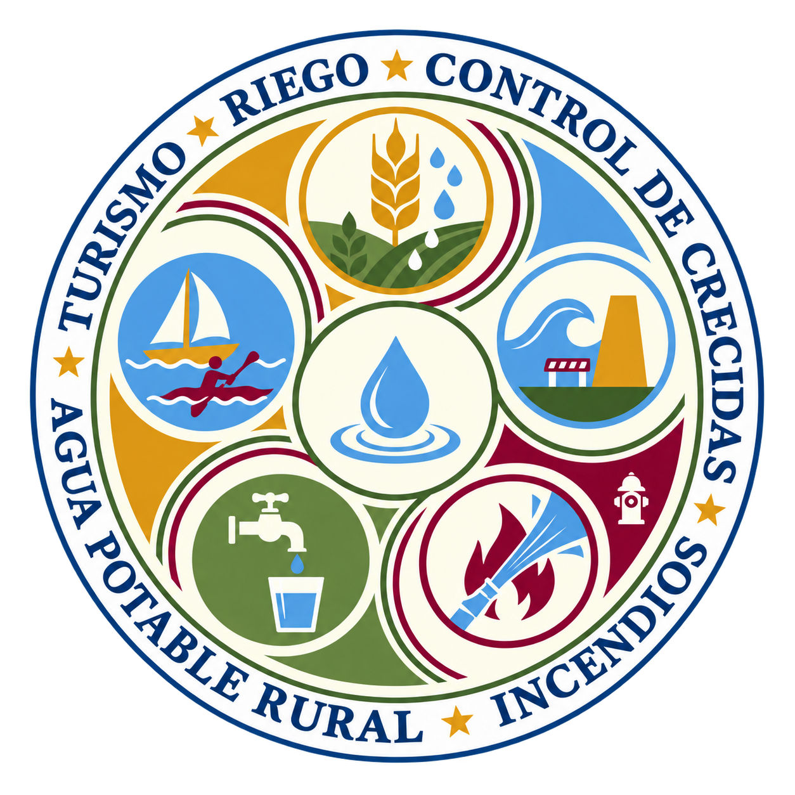

Diseño Embalse Bollenar
El Embalse Bollenar se proyecta en la comuna de Rengo, Región de O’Higgins, Chile, como una infraestructura hidráulica de carácter multipropósito, orientada a fortalecer la seguridad hídrica y contribuir al desarrollo sostenible del territorio.

La cuenca del Río Claro enfrenta un escenario complejo de déficit hídrico. Este estudio busca generar una infraestructura de acumulación capaz de asegurar el abastecimiento de riego y entregar sustentabilidad al valle.
Embalse con volumen total de 59 Hm³ y 143 Ha de área de inundación. Sustentará 5.975 acciones de la Junta de Vigilancia del Río Claro (equivalencia de 2,5 l/s).
El proyecto contempla la construcción de una presa tipo CFRD (Concrete Face Rockfill Dam) o presa de enrocado con pantalla de hormigón, con una altura máxima de 106 metros y un largo de coronamiento de 480 metros.
Visualiza el progreso de las distintas fases técnicas que componen la etapa de diseño de ingeniería para el Embalse Bollenar.
Visualiza el progreso del estudio técnico y las declaraciones de las autoridades regionales sobre la viabilidad e impacto de este importante proyecto hídrico.